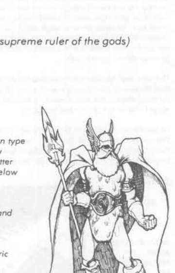

奥丁 “众神之父” · Odin “All Father”
Odin（诸神之父） 是中立善良强大神，AC −5，400 点生命值，魔法抗性 85%，位于 Gladsheim。他不能复活死者，却能让任何生物沉睡 1–10 天；心灵感应范围三百英里，可随意变形，并能令三十码内生物陷入狂暴。凝视他的眼睛会使目标麻痹。
Odin 的长矛 Gungnir 是 +5 武器，总会指向敌方最强者；他持 +3 复合反曲弓，每轮可射十支 +3 箭。其金色 Rune Wand 是神器，每次使用激活不同符文，可统治、召来元素、抽取能量等级或令触碰者即死。Odin 还有魔狼 Freke 与 Gere、渡鸦 Huginn 与 Munin，以及八足坐骑 Sleipner。
